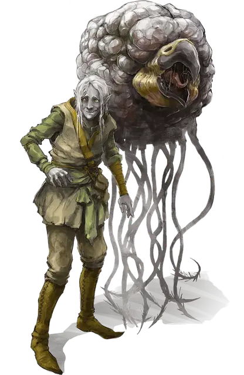

Нар’ль Зебриндас
Nar’l Xibrindas
Средний Гуманоид (Эльф), нейтрально-злой, именной НИП

Класс Доспеха 12 (15 с доспехами мага)
Хиты 45 (10к8)
Скорость 30 футов
| мод | спас | ||
|---|---|---|---|
| СИЛ | 9 | −1 | −1 |
| ЛОВ | 14 | +2 | +2 |
| ТЕЛ | 10 | +0 | +0 |
| мод | спас | ||
|---|---|---|---|
| ИНТ | 17 | +3 | +3 |
| МДР | 13 | +1 | +1 |
| ХАР | 12 | +1 | +1 |
Навыки Восприятие +4, Магия +6, Обман +5, Скрытность +5
Чувства тёмное зрение 120 футов, пассивное Восприятие 14
Языки Подземный, Эльфийский
Опасность 7 (2900 опыта)
Бонус мастерства +3
Особенности
Особое снаряжение. Нар’ль имеет при себе пузырёк с тремя дозами глазодёра (контактного яда). Существо, соприкоснувшееся с ядом, должно совершить спасбросок Телосложения Сл 14, в случае провала становясь отравленным на 1 час и ослепленным, пока отравлено таким образом. Заклинание малое восстановление или иная подобная магия прекращает этот эффект.
Наследие фей. Нар’ль совершает с преимуществом спасброски от очарования, и магия не может его усыпить.
Врождённое колдовство. Базовой характеристикой для врождённых заклинаний Нар’ля является Харизма (Сл спасброска от заклинания 12). Он может накладывать следующие заклинания, не нуждаясь в материальных компонентах:
• Неограниченно: пляшущие огоньки
• 1/день каждое: левитация (только на себя), огонь фей, тьма
Использование заклинаний. Нар’ль является заклинателем 10-го уровня. Его базовой характеристикой является Интеллект (Сл спасброска от заклинания 14, +6 к попаданию атаками заклинаниями). У него подготовлены следующие заклинания волшебника:
• Заговоры (неограниченно): волшебная рука, луч холода, малая иллюзия, ядовитые брызги
• 1 уровень (4 ячейки): ведьмин снаряд, волшебная стрела, доспехи мага, щит
• 2 уровень (3 ячейки): паутина, смена обличья, туманный шаг
• 3 уровень (3 ячейки): молния, полёт
• 4 уровень (3 ячейки): высшая невидимость, Эвардовы чёрные щупальца
• 5 уровень (2 ячейки): облако смерти
Чувствительность к солнечному свету. Находясь на солнечном свету, Нар’ль совершает с помехой броски атаки, а также проверки Мудрости (Восприятие), полагающиеся на зрение.
Действия
Посох. Рукопашная атака оружием: +2 к попаданию, досягаемость 5 футов, одна цель. Попадание: Дробящий урон 2 (1к6 − 1), или дробящий урон 3 (1к8 − 1), если используется двумя руками, плюс урон ядом 3 (1к6).
Призыв демона (1/день). Нар’ль магическим образом призывает квазита [quasit], или пытается призвать теневого демона [shadow demon] с 50-процентным шансом успеха. Призванный демон появляется в свободном пространстве в пределах 60 футов от призывателя, действует как его союзник, и не может призывать других демонов. Он присутствует в течение 10 минут, пока он, либо призыватель, не умрут, или пока призыватель не отпустит его действием.
Описание
Советник Занатара — нервозный и коварный мужчина-дроу. Дом Нар’ля давно истреблён, но они со старшим братом Солуном выжили и присоединились к Бреган Д’эрт. Год назад Нар’лю поручили трудное задание: внедриться в гильдию Занатара и подобраться к бехолдеру как можно ближе. Он не только сумел завоевать доверие Занатара, но даже убедил бехолдера избавиться от прочих советников. Подозрительность бехолдера в итоге заставила его сомневаться и в верности дроу, так что Нар’ль побаивается за своё будущее. Если придётся выбирать между собой и Бреган Д’эрт, он выберет себя и предаст товарищей-дроу, спасая свою шкуру.
Занатар уже заметил, что с Нар’лем что-то не так, и назначил ему телохранителя-грелла. Тому велено изба виться от Нар’ля при малейших признаках измены.
Нар’ль подготавливает и накладывает заклинание послание всякий раз, когда нужно пообщаться с братом.